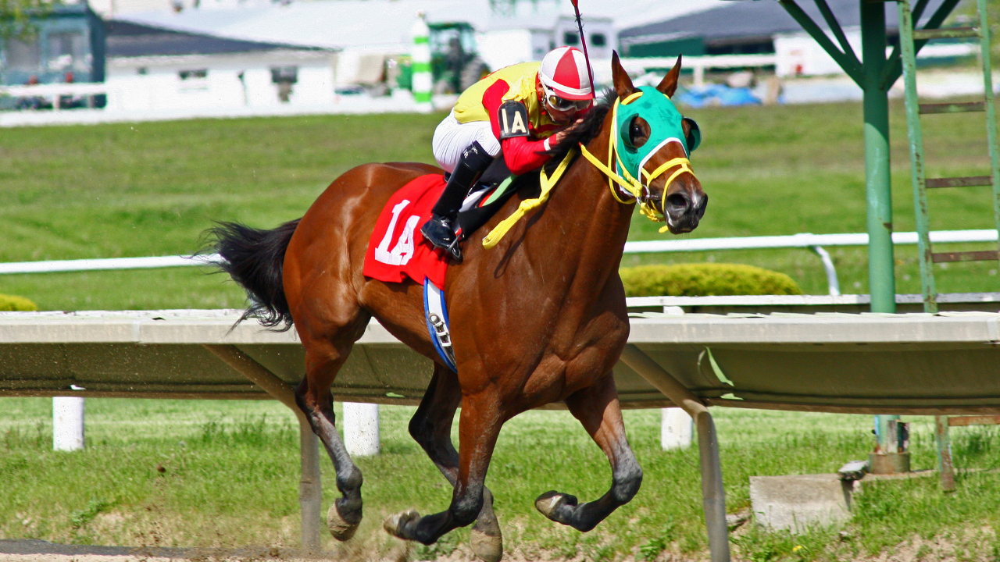

Le Prix Calabrais à Auteuil, c'est LE rendez-vous de l'obstacle auquel vous ne devez pas manquer ce mardi. Sur la butte Mortemart, les meilleurs sauteurs de génération s'affrontent sur les haies. Nous vous livrons notre analyse complète et nos pronostics pour ce Quinté+.
Cette épreuve d'obstacle se dispute sur le mythique hippodrome d'Auteuil, temple du saut en France. La distance et le profil des haies d'Auteuil exigent des chevaux complets : un bon sauteur, une grande endurance et un mental à toute épreuve. Le terrain joue un rôle majeur, et chaque modification de la piste peut rebattre les cartes.
Les meilleurs jockeys d'obstacle du pays sont présents, et c'est précisément dans ce type de configuration que les pilotes expérimentés font la différence. Un parcours bien négocié, une économie d'énergie parfaite et un coup de reins propre sur le dernier obstacle : voilà ce qui sépare les vainqueurs des autres.
Dans les gros handicaps d'obstacle, l'analyse se joue sur plusieurs critères : la forme récente, la valeur de la classe, l'aptitude au parcours et le poids de la confrontation. Certains concurrents présentent une musique irrégulière mais ont prouvé à Auteuil qu'ils possèdent une vraie marge en valeur pure.
Notre approche privilégie les chevaux testés sur le tracé d'Auteuil dans cette génération, ceux qui ont déjà montré leur capacité à venir finir fort sur la ligne droite finale. Les pensionnaires performants dans son coach, portés par des jockeys en grande réussite, constituent notre priorité.
Le plateau est relevé avec plusieurs pensionnaires en grande forme qui justifient leur statut de favoris. Les cotes basses reflètent la confiance des parieurs et les performances récentes. Mais attention à ne pas négliger les chevaux qui reviennent de préparation ciblée, ceux-ci étant souvent surprenants dans les prix d'obstacle.
Notre base se porte sur un élément qui a déjà prouvé sa belle mécanique sur les haies d'Auteuil et qui bénéficie d'un engagement en or dans ce lot.
C'est dans les lots d'obstacle qu'on trouve les meilleurs rapports du programme hippique. Plusieurs chevaux à belle cote disposent d'arguments sérieux : une valeur compétitive, un jockey en réussite et surtout une affinité avec le terrain d'Auteuil.
Nos outsiders valent la peine d'être associés aux favoris dans vos combinaisons, en particulier sur le second et le troisième rang.
Pour jouer ce Quinté+ dans de bonnes conditions, nous recommandons un ticket resserré avec notre base en tête, puis une approche plus élargie en champ réduit pour couvrir les outsiders. Le jeu à trois budgets permet de moduler la prise de risque selon votre bankroll.
Rappelez-vous : jouez toujours de manière responsable et n'engagez que l'argent que vous pouvez vous permettre de perdre.